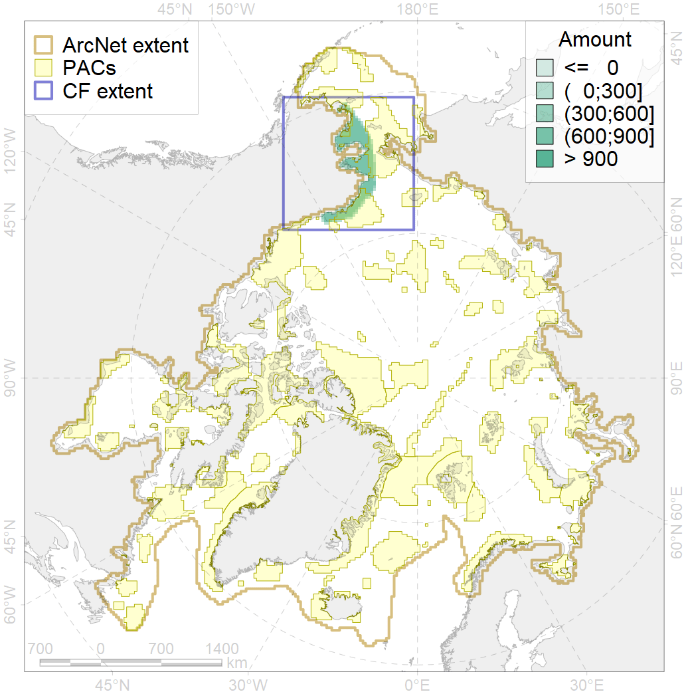
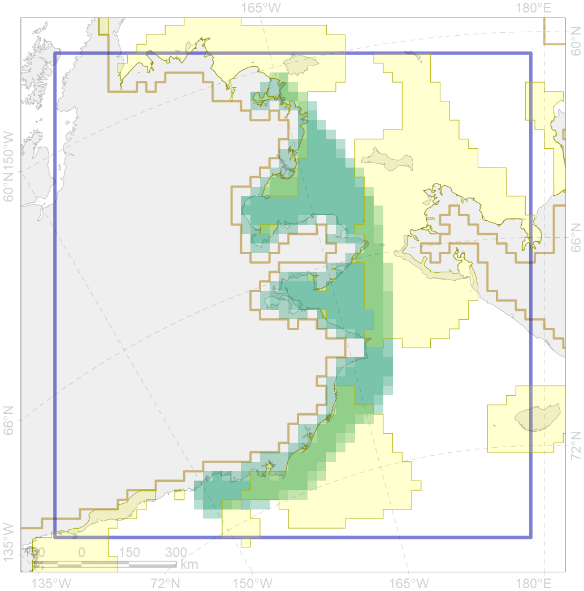

4013

| CF ID | 4013 |
| CF Name | Feeding/nursery area of the Bering cisco (Coregonus laurettae), Asian populations |
| Time Period | 1940s-2010s |
| Source(s) | Chernova, 2011 |
| Seasonality | January-December |
| Depth Horizon | coastal waters |
| Methodology | Compiled from literature sources based on field observations |
| Author Name | N. Chernova |
| Notes | Chernova (2011) compiled the data of: Alt, 1973; Scott andCrossman, 1973; Chereshnev, 1990, 2008; Bickham et al., 1997; Mecklenburg et al., 2002; Coad, Reist, 2004; COSEWIC…, 2004 |
| Conservation Target Set in the Scenario | 0.324 |
| Conservation Target Achieved in the Scenario | 0.337 (Scenario: 104.0%) |
| PAC ID | Proportion in the PAC | Contribution to ArcNet Target Achievement | PAC’s Contribution to the Achieved Target |
|---|---|---|---|
| 3 | 8.1% | 19.8% | 19.1% |
| 5 | 12.3% | 27.7% | 26.6% |
| 6 | 0.5% | 1.6% | 1.5% |
| 60 | 19.0% | 46.0% | 44.2% |
| inner | 39.9% | 95.0% | 91.4% |
| outer | 60.1% | 9.0% | 8.6% |